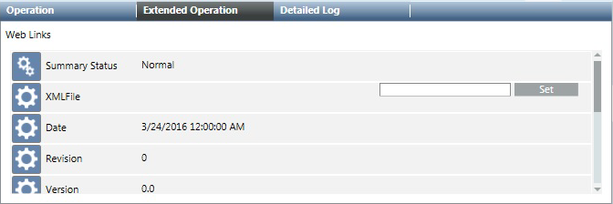

Library References
In Engineering mode, when authorized experts (with appropriate access rights) select an existing Web Applications library folder or start configuring a new one the Rule Editor displays and lets you configure display rules at library level. Only one library folder of this type can be created per library.

NOTE:
Only Headquarter experts and Customer Support are authorized to modify the external web application display rules library at L1-Headquarter level.
The customization of L1-Headquarter to a lower level is not supported by external web application display rules libraries.
Depending on the allowed customization level, authorized experts can create and modify external web applications libraries at L2-Region, L3-Country, or L4-Project level.
Web Links Library Block
Web Links is the library block that serves as a support library for setting the XML configuration file for an external web application. You can create multiple library blocks of this type per library.
NOTE:
Only Headquarter experts and Customer Support are authorized to modify the web links at L1-Headquarter level.
The customization of L1-Headquarter to a lower level is not supported by web links.
Depending on the allowed customization level, authorized experts can create and modify web links at L2-Region, L3-Country, or L4-Project level.
You can set the external web application XML configuration file from the Extended Operation tab.
